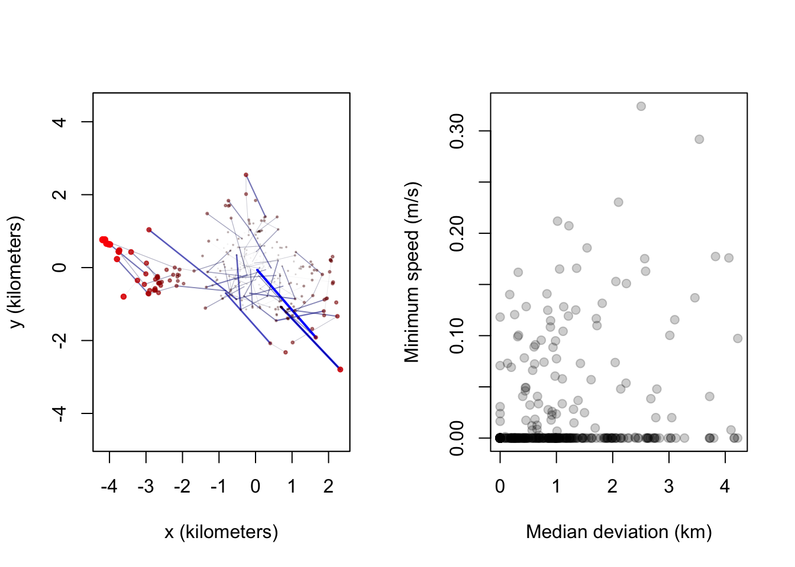
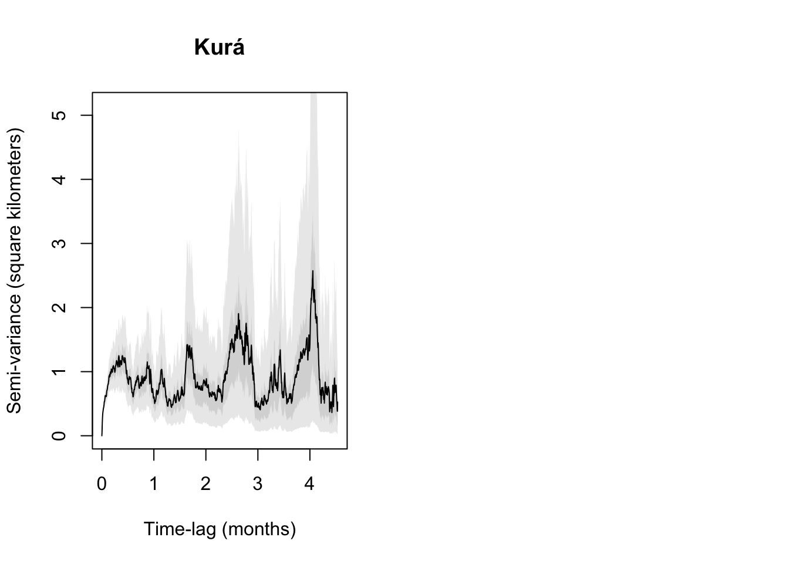
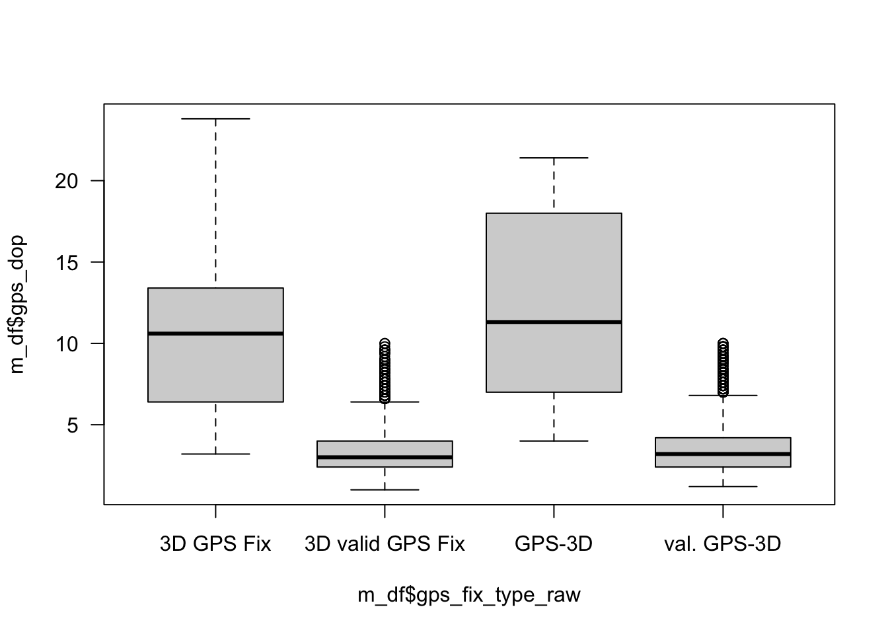

3.4 Ocelots
3.4.1 Kurá (CR)
VERTEX Plus collar.
First observation: 2024-05-27 00:01:48
Last observation: 2024-07-02 22:01:30
Active for: 36.9 days
Distance moved:
To date we have 22 fixes from . Of those, they are of the following types.
| Var1 | Freq | Percentage |
|---|---|---|
| Succeeded | 21 | 0.95 |
| Unresolved QFP | 1 | 0.05 |
Plot of the raw data:
The average number of fixes per day to date 0.6 per day.
Those are distributed through time as follows:

Remove the crazy outlier.
We should also use ctmm (as in the vultures) to find errors:


3.4.2 Katsímari (PE)
VERTEX Plus collar.
First observation: 2024-05-28 12:02:30
Last observation: 2024-06-02 20:01:30
Active for: 5.3 days
Distance moved:
To date we have 19 fixes from . Of those, they are of the following types.
| Var1 | Freq | Percentage |
|---|---|---|
| Resolved QFP (Uncertain) | 1 | 0.05 |
| Succeeded | 18 | 0.95 |
Plot of the raw data:
The average number of fixes per day to date 3.6 per day.
Those are distributed through time as follows:

Remove the crazy outlier.
We should also use ctmm (as in the vultures) to find errors:


3.4.3 Jerry (CR)
VERTEX Plus collar.
First observation: 2024-06-11 00:01:00
Last observation: 2024-07-07 04:00:48
Active for: 26.2 days
Distance moved:
To date we have 167 fixes from . Of those, they are of the following types.
| Var1 | Freq | Percentage |
|---|---|---|
| Succeeded | 160 | 0.96 |
| Unresolved QFP | 7 | 0.04 |
Plot of the raw data:
The average number of fixes per day to date 6.4 per day.
Those are distributed through time as follows:

Remove the crazy outliers.
We should also use ctmm (as in the vultures) to find errors:


3.4.4 Pasooki (Peru)
VERTEX Plus collar.
First observation: 2024-06-16 02:01:00
Last observation: 2024-07-03 02:01:00
Active for: 17 days
Distance moved:
To date we have 26 fixes from . Of those, they are of the following types.
| Var1 | Freq | Percentage |
|---|---|---|
| Resolved QFP (Uncertain) | 1 | 0.04 |
| Succeeded | 23 | 0.88 |
| Unresolved QFP | 2 | 0.08 |
Plot of the raw data:
The average number of fixes per day to date 1.5 per day.
Those are distributed through time as follows:

Remove the crazy outliers.
We should also use ctmm (as in the vultures) to find errors:


3.4.5 Echo (CR)
VERTEX Plus collar.
First observation: 2024-06-29 08:02:48
Last observation: 2024-07-07 16:02:54
Active for: 8.3 days
Distance moved:
To date we have 34 fixes from . Of those, they are of the following types.
| Var1 | Freq | Percentage |
|---|---|---|
| Succeeded | 34 | 1 |
Plot of the raw data:
The average number of fixes per day to date 4.1 per day.
Those are distributed through time as follows:

Remove the crazy outliers.
We should also use ctmm (as in the vultures) to find errors: